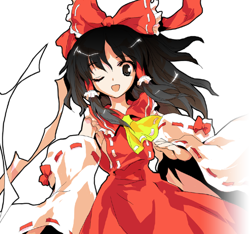

博麗霊夢 하쿠레이 레이무
キャラクター 캐릭터
楽園の巫女。普段は気だるく面倒くさがりで、戦闘中は落ち着いて真剣。お賽銭に執着しています。
낙원의 무녀. 평소엔 나른하고 귀찮아하며, 전투 중엔 침착하고 진지합니다. 새전에 집착합니다.
サンプル6（Asamia） 0:00〜0:07
샘플 6 (Asamia) 0:00〜0:07
付録：ゲーム内映像 부록: 인게임 영상
AI音声による仮の音声です。状況の参考にだけしてください。
AI 임시 음성입니다. 상황만 참고하세요.
表の ▶ を押すと、その台詞の場面から再生します。
표의 ▶를 누르면 그 대사 장면부터 재생합니다.
台詞 대사
掛け声 기합 (14)
| No | 映像 | ファイル名 | 状況 상황 | 台詞 | 読み | 意味 뜻 |
|---|---|---|---|---|---|---|
| 1 | vo_reimu_eff_l_01 | 弱攻撃の掛け声 약공격 기합 | ふっ！ | ふっ | 흡! | |
| 2 | vo_reimu_eff_l_02 | 弱攻撃の掛け声 약공격 기합 | はっ！ | はっ | 합! | |
| 3 | vo_reimu_eff_l_03 | 弱攻撃の掛け声 약공격 기합 | やっ！ | やっ | 핫! | |
| 4 | vo_reimu_eff_l_04 | 弱攻撃の掛け声 약공격 기합 | えいっ！ | えいっ | 에잇! | |
| 5 | vo_reimu_eff_h_01 | 強攻撃の掛け声 강공격 기합 | やあっ！ | やあっ | 얍! | |
| 6 | vo_reimu_eff_h_02 | 強攻撃の掛け声 강공격 기합 | いやあっ！ | いやあっ | 이야! | |
| 7 | vo_reimu_eff_h_03 | 強攻撃の掛け声 강공격 기합 | せいっ！ | せいっ | 세잇! | |
| 8 | vo_reimu_eff_h_04 | 強攻撃の掛け声 강공격 기합 | はああっ！ | はああっ | 하앗! | |
| 9 | vo_reimu_eff_w_01 | 強攻撃のひとこと 강공격 한마디 | どう？ | どう | 어때! | |
| 10 | vo_reimu_eff_w_02 | 強攻撃のひとこと 강공격 한마디 | うるさい！ | うるさい | 시끄러! | |
| 11 | vo_reimu_eff_w_03 | 強攻撃のひとこと 강공격 한마디 | そこっ！ | そこっ | 거기! | |
| 12 | vo_reimu_eff_w_04 | 強攻撃のひとこと 강공격 한마디 | 面倒くさい！ | めんどくさい | 귀찮게! | |
| 13 | vo_reimu_eff_s_01 | ジャンプ・ダッシュの小さな息 점프·대시 숨소리 | ふっ | ふっ | 흣 | |
| 14 | vo_reimu_eff_s_02 | ジャンプ・ダッシュの小さな息 점프·대시 숨소리 | よっ | よっ | 읏차 |
必殺技 필살기 (11)
| No | 映像 | ファイル名 | 状況 상황 | 台詞 | 読み | 意味 뜻 |
|---|---|---|---|---|---|---|
| 15 | vo_reimu_Special1_01 | 必殺技1（技名） 필살기 1 (기술 이름) | 封魔針！ | ふうましん | 봉마침! | |
| 16 | vo_reimu_Special1_02 | 必殺技1（ひとこと） 필살기 1 (한마디) | ほらっ！ | ほらっ | 받아! | |
| 17 | vo_reimu_Special2_01 | 必殺技2（技名） 필살기 2 (기술 이름) | 陰陽玉！ | おんみょうだま | 음양옥! | |
| 18 | vo_reimu_Special2_02 | 必殺技2（ひとこと） 필살기 2 (한마디) | 転がれ！ | ころがれ | 굴러가! | |
| 19 | vo_reimu_Special4_01 | 必殺技4（技名） 필살기 4 (기술 이름) | 昇天脚！ | しょうてんきゃく | 승천각! | |
| 20 | vo_reimu_Special4_02 | 必殺技4（ひとこと） 필살기 4 (한마디) | 落ちなさい！ | おちなさい | 떨어져! | |
| 21 | vo_reimu_Special5_01 | 必殺技5（技名） 필살기 5 (기술 이름) | 亜空穴！ | あくうけつ | 아공혈! | |
| 22 | vo_reimu_Special5_02 | 必殺技5（ひとこと） 필살기 5 (한마디) | こっちよ！ | こっちよ | 이쪽이야! | |
| 23 | vo_reimu_Special6 | 必殺技6（技名） 필살기 6 (기술 이름) | 上からよっ！ | うえからよっ | 위에서야! | |
| 24 | vo_reimu_Special7_01 | 必殺技7（技名） 필살기 7 (기술 이름) | 博麗アミュレット！ | はくれいあみゅれっと | 하쿠레이 아뮬렛! | |
| 25 | vo_reimu_Special7_02 | 必殺技7（ひとこと） 필살기 7 (한마디) | 追いかけなさい！ | おいかけなさい | 쫓아가! |
スペルカード宣言 스펠카드 선언 (2)
| No | 映像 | ファイル名 | 状況 상황 | 台詞 | 読み | 意味 뜻 |
|---|---|---|---|---|---|---|
| 26 | vo_reimu_Spell1_call | スペルカード（超必殺技）1の宣言 스펠카드 1 선언 | 霊符「夢想封印」！ | れいふ むそうふういん | 영부, 몽상봉인! | |
| 27 | vo_reimu_Spell2_call | スペルカード（超必殺技）2の宣言 스펠카드 2 선언 | 神技「八方鬼縛陣」！ | しんぎ はっぽう きばくじん | 신기, 팔방귀박진! |
システム・挑発 시스템·도발 (1)
| No | 映像 | ファイル名 | 状況 상황 | 台詞 | 読み | 意味 뜻 |
|---|---|---|---|---|---|---|
| 28 | vo_reimu_Taunt | 挑発 도발 | ふう……お茶がおいしい。 | ふう おちゃがおいしい | 후우… 차 맛있다. |
被ダメージ・KO 피격·KO (7)
| No | 映像 | ファイル名 | 状況 상황 | 台詞 | 読み | 意味 뜻 |
|---|---|---|---|---|---|---|
| 29 | vo_reimu_hurt_l_01 | 小ダメージ 약한 피격 | いたっ！ | いたっ | 아얏! | |
| 30 | vo_reimu_hurt_l_02 | 小ダメージ 약한 피격 | くっ！ | くっ | 큭! | |
| 31 | vo_reimu_hurt_l_03 | 小ダメージ 약한 피격 | うっ！ | うっ | 윽! | |
| 32 | vo_reimu_hurt_h_01 | 大ダメージ・吹き飛び・投げられ 강한 피격·날아감·잡힘 | きゃあっ！ | きゃあっ | 꺄악! | |
| 33 | vo_reimu_hurt_h_02 | 大ダメージ・吹き飛び・投げられ 강한 피격·날아감·잡힘 | うあああっ！ | うあああっ | 으아앗! | |
| 34 | vo_reimu_hurt_h_03 | 大ダメージ・吹き飛び・投げられ 강한 피격·날아감·잡힘 | ああああっ！ | ああああっ | 아아앗! | |
| 35 | vo_reimu_Frozen | チルノに凍らされる 치르노에게 얼어붙음 | 冷たっ！ | つめたっ | 차가워! |
ラウンド・勝敗 라운드·승패 (7)
| No | 映像 | ファイル名 | 状況 상황 | 台詞 | 読み | 意味 뜻 |
|---|---|---|---|---|---|---|
| 36 | vo_reimu_Intro_01 | 登場（共通） 등장(공통) | また退治の依頼？ 面倒くさいわね。 | またたいじのいらい めんどくさいわね | 또 퇴치 의뢰야? 귀찮게. | |
| 37 | vo_reimu_Intro_02 | 登場（共通） 등장(공통) | さっさと終わらせて、お茶にしよ。 | さっさとおわらせて おちゃにしよ | 빨리 끝내고 차나 마셔야지. | |
| 38 | vo_reimu_Intro_03 | 登場（共通） 등장(공통) | なんだ、参拝客かと思ったのに。 | なんだ さんぱいきゃくかとおもったのに | 참배객인 줄 알았잖아. | |
| 39 | vo_reimu_RoundWin_01 | ラウンド勝利（短く） 라운드 승리(짧게) | 次。 | つぎ | 다음. | |
| 40 | vo_reimu_RoundWin_02 | ラウンド勝利（短く） 라운드 승리(짧게) | この程度？ | このていど | 이 정도야? | |
| 41 | vo_reimu_Win_01 | 試合に勝利 게임 승리 | 退治完了。お賽銭は置いていきなさい。 | たいじ かんりょう おさいせんは おいていきなさい | 퇴치 완료. 새전은 두고 가. | |
| 42 | vo_reimu_Win_02 | 試合に勝利 게임 승리 | さて、お茶にしましょ。 | さて おちゃにしましょ | 이제 차 마시러 가야지. |
対戦相手別 상대별 (9)
| No | 映像 | ファイル名 | 状況 상황 | 台詞 | 読み | 意味 뜻 |
|---|---|---|---|---|---|---|
| 43 | vo_reimu_Intro_marisa_a | 登場：魔理沙戦（先に話す。魔理沙が「あれは借りただけだぜ。そのうち返すって。」と返します） 등장: 마리사전 (먼저 말함. 마리사의 응답 「그건 빌린 것뿐이야. 언젠가 갚는다니까.」) | 持ってったお酒、返しなさい。 | もってったおさけ かえしなさい | 가져간 술, 오늘 갚아. | |
| 44 | vo_reimu_Intro_marisa_b | 登場：魔理沙戦（魔理沙の「よう霊夢、暇そうだな。一戦どうだ？」に返す） 등장: 마리사전 (마리사의 「어이 레이무, 한가해 보이네. 한판 어때?」에 대답) | 暇じゃないわよ。勝ったら、お酒返しなさい。 | ひまじゃないわよ かったら おさけ かえしなさい | 안 한가하거든. 이기면 술 돌려줘. | |
| 45 | vo_reimu_Win_marisa | 魔理沙に勝利 마리사에게 승리 | 太いだけのレーザーね。 | ふといだけの れーざーね | 레이저만 굵으면 뭐 해. | |
| 46 | vo_reimu_Intro_sanae_a | 登場：早苗戦（先に話す。早苗が「取ってません！ 奇跡に惹かれて来るんです！」と返します） 등장: 사나에전 (먼저 말함. 사나에의 응답 「안 뺏었어요! 기적에 끌려 오는 거예요!」) | うちの信者を取らないで、早苗。 | うちのしんじゃを とらないで さなえ | 신자 빼 가지 마, 사나에. | |
| 47 | vo_reimu_Intro_sanae_b | 登場：早苗戦（早苗の「霊夢さん、どっちの巫女が上か決めましょう！」に返す） 등장: 사나에전 (사나에의 「레이무 씨, 어느 쪽 무녀가 위인지 가려요!」에 대답) | 決めるまでもないわ。本家はうちよ。 | きめるまでもないわ ほんけは うちよ | 가릴 것도 없어. 원조는 우리야. | |
| 48 | vo_reimu_Win_sanae | 早苗に勝利 사나에에게 승리 | お賽銭箱まで狙わないでよね。 | おさいせんばこまで ねらわないでよね | 새전함까지 넘보지 마. | |
| 49 | vo_reimu_Intro_yukari_a | 登場：紫戦（先に話す。紫が「あら、覗かれて困ることでもあるの？」と返します） 등장: 유카리전 (먼저 말함. 유카리의 응답 「어머, 엿보이면 곤란한 거라도 있어?」) | また隙間から覗いてたわね。 | また すきまから のぞいてたわね | 또 틈새로 엿보고 있었지? | |
| 50 | vo_reimu_Intro_yukari_b | 登場：紫戦（紫の「霊夢、修行はちゃんとしているのかしら？」に返す） 등장: 유카리전 (유카리의 「레이무, 수행은 제대로 하고 있니?」에 대답) | 修行なら、あんた相手で十分よ。 | しゅぎょうなら あんたあいてで じゅうぶんよ | 수행이라면 너 상대로 충분해. | |
| 51 | vo_reimu_Win_yukari | 紫に勝利 유카리에게 승리 | 用がないなら、さっさと帰って寝てなさい。 | ようがないなら さっさとかえって ねてなさい | 볼일 없으면 얼른 가서 자. |
アナウンサー（DLC・追加収録。両プレイヤーに向けた進行役として、短くはっきり） 아나운서 (DLC 추가 녹음. 두 플레이어 모두에게 말하는 진행자로, 짧고 또렷하게) (6)
アナウンサーの場面の映像です（咲夜のAI仮音声）。全員共通の映像なので、台詞は下の表を見てください。
아나운서 장면 영상입니다(사쿠야 AI 임시 음성). 모든 캐릭터 공용 영상이라 대사는 아래 표를 보세요.
| No | 映像 | ファイル名 | 状況 상황 | 台詞 | 読み | 意味 뜻 |
|---|---|---|---|---|---|---|
| 52 | vo_ann_reimu_Ready_01 | ラウンド開始の呼びかけ（毎ラウンド・2種） 라운드 시작 호출 (매 라운드, 2가지) | 始めるわよ | はじめるわよ | 시작할게 | |
| 53 | vo_ann_reimu_Ready_02 | ラウンド開始の呼びかけ（毎ラウンド・2種） 라운드 시작 호출 (매 라운드, 2가지) | 準備はいい？ | じゅんびはいい | 준비됐어? | |
| 54 | vo_ann_reimu_Fight_01 | 試合開始の合図（ひとこと・2種） 시작 신호 (한 단어, 2가지) | 始め！ | はじめ | 시작! | |
| 55 | vo_ann_reimu_Fight_02 | 試合開始の合図（ひとこと・2種） 시작 신호 (한 단어, 2가지) | 勝負！ | しょうぶ | 승부! | |
| 56 | vo_ann_reimu_KO | KO（決着の一撃） KO (결정타) | そこまで！ | そこまで | 거기까지! | |
| 57 | vo_ann_reimu_TimeUp | タイムアップ 타임업 | 時間切れ | じかんぎれ | 시간 끝 |